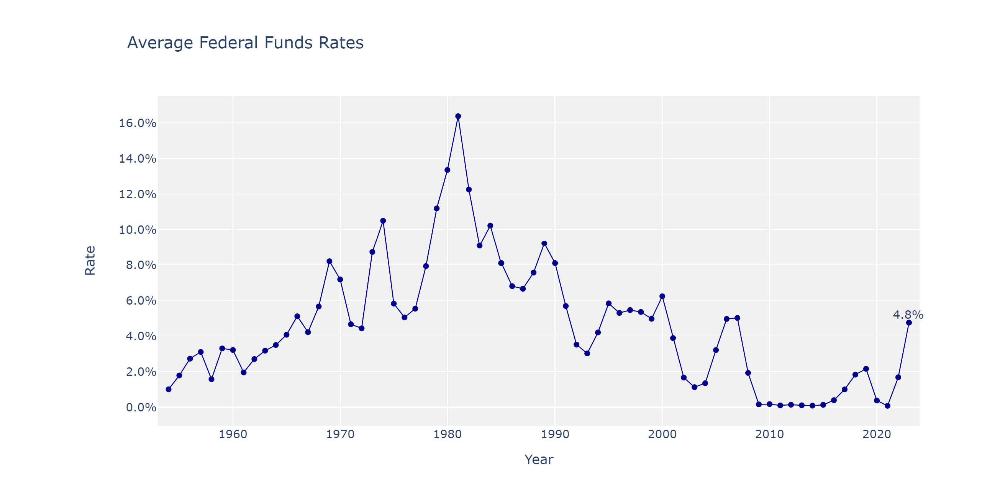

Understanding the US Federal Funds Rate is key to decoding the nation's economic history. This critical interest rate, set by the Federal Reserve, impacts every aspect of the economy, from consumer spending to business investment. Let's embark on a journey through the history of the Federal Funds Rate, from the post-war boom in the late 1950s to the recent challenges of the COVID-19 pandemic.
In the late 1950s to early 1960s, the US was in the midst of a period often referred to as the "post-war economic boom." This was a time of substantial economic growth and prosperity, following the end of World War II and the recovery from the Great Depression.
The US emerged from WWII as one of the world's leading economic powers. The war had stimulated significant industrial and technological development, and there was high demand for goods, both domestically and internationally. This led to high levels of production, employment, and income.
During this period, inflation was relatively low and stable, and there was significant confidence in the economy. As a result, the Federal Reserve was able to maintain a relatively low Federal Funds Rate. The low-interest-rate environment was designed to encourage borrowing and investment, further fueling economic growth and stability.
The Federal Reserve's approach to managing the Federal Funds Rate during this period was largely accommodative, aimed at supporting the economy's strong growth trajectory. The rate was kept low to encourage lending, stimulate investment, and support continued expansion.
In this context, the Federal Reserve's decision to keep the Federal Funds Rate low was a response to the strong and stable economic conditions of the time. It reflected a monetary policy approach that prioritized economic growth and stability, leveraging the favorable economic conditions to maximize prosperity and well-being.
In the late 1960s through to the early 1980s, the US economy experienced significant changes and challenges. The most notable phenomenon during this period was "stagflation", a situation characterized by stagnant economic growth and high inflation, a combination that is generally considered problematic for economic policy management.
The stagflation period was triggered by a combination of factors, including the end of the Bretton Woods system of fixed exchange rates, supply shocks like the oil crises of the 1970s, and ongoing fiscal pressures from social spending and the Vietnam War.
In response to the rising inflation, the Federal Reserve, led by Chairman Paul Volcker from 1979, implemented a policy of high interest rates, leading to a significant increase in the Federal Funds Rate. This policy, known as a contractionary monetary policy, was intended to slow down the economy and reduce inflation. High interest rates make borrowing more expensive, which can decrease spending and investment, reducing demand and slowing inflation.
While the policy was successful in taming inflation over the long term, it also contributed to a severe recession in the early 1980s, with high unemployment and significant business failures. However, once inflation expectations were reduced, the Federal Reserve was able to lower the Federal Funds Rate again, which helped to stimulate economic recovery.
In essence, the turbulent economic conditions of the late 1960s to the early 1980s, characterized by high inflation and slow growth, compelled the Federal Reserve to make significant adjustments to the Federal Funds Rate in an attempt to stabilize the economy. The rate was raised to historically high levels in order to rein in inflation, demonstrating the Federal Reserve's commitment to its dual mandate of price stability and maximum employment.
The mid-1980s to the early 2000s was a period of sustained economic growth and stability in the US, often referred to as the "Great Moderation". This era was characterized by reduced volatility in economic output and inflation, as well as low and stable unemployment rates.
Several factors contributed to this period of stability, including structural changes in the economy such as the shift from manufacturing to services, improved inventory management techniques, and more effective monetary policy.
The Federal Reserve, under the leadership of Chairmen Paul Volcker and later Alan Greenspan, played a significant role in maintaining this stability. The Federal Funds Rate was used strategically during this period to manage economic growth and keep inflation in check. The rate generally followed a downward trend, with occasional increases to prevent the economy from overheating.
In response to minor recessions, such as the one following the Black Monday stock market crash in 1987 and the Gulf War in the early 1990s, the Federal Reserve quickly lowered the Federal Funds Rate to stimulate the economy. Once the economy recovered, the rate was gradually increased again.
In the late 1990s, despite the economic boom driven by the dot-com bubble, the Federal Reserve managed to keep inflation under control through careful adjustments of the Federal Funds Rate. This allowed the economy to grow rapidly without triggering a spike in inflation.
The Federal Reserve's management of the Federal Funds Rate during the "Great Moderation" was crucial in maintaining economic stability. The use of the rate to respond to economic changes helped to sustain a long period of growth, manage inflation, and mitigate the impacts of minor recessions.
The early 2000s were a turbulent time for the US economy. The period began with the bursting of the dot-com bubble, an event that led to a mild recession in 2001. The bubble had been driven by speculation in the stock market, particularly in technology stocks, which had seen their values skyrocket during the late 1990s. However, many of these companies failed to turn a profit, and when investor confidence waned, the bubble burst.
The September 11, 2001 terrorist attacks further added to the economic uncertainty. These events led to significant economic disruptions, including a downturn in the stock market and reduced consumer and business confidence.
In response to these challenges, the Federal Reserve, under Chairman Alan Greenspan, aggressively cut the Federal Funds Rate from 6.5% in 2000 to 1.75% by the end of 2001, and ultimately to 1% in 2003. The goal of these rate cuts was to stimulate economic activity by making borrowing cheaper, thereby encouraging spending and investment.
The low interest rates did help to spur a recovery, but they also contributed to the formation of a housing bubble. The cheap borrowing costs led to an increase in mortgage lending, including subprime loans, which in turn drove up housing prices.
The economic challenges of the early 2000s led the Federal Reserve to significantly lower the Federal Funds Rate in an effort to stimulate economic recovery. While this policy was successful in the short term, it also contributed to imbalances in the economy, including the housing bubble, which would have significant implications in the years to come.
The 2008 Financial Crisis, also known as the Global Financial Crisis (GFC), was one of the most severe economic downturns since the Great Depression. It began with the bursting of the US housing bubble and the associated subprime mortgage crisis.
Leading up to the crisis, the early 2000s had seen a boom in the US housing market, driven in part by low interest rates, lax lending standards, and the securitization of mortgages. However, when housing prices started to fall in 2006, many homeowners found themselves in a position of negative equity, with their homes worth less than their mortgages. This led to a sharp increase in defaults and foreclosures.
These mortgage-related problems soon spread to financial institutions around the world. Many banks had invested heavily in mortgage-backed securities and derivatives that were tied to the US housing market. As defaults rose and the value of these securities plummeted, many financial institutions faced significant losses.
The crisis deepened in 2008 with the collapse of Lehman Brothers, a major investment bank. This event caused a severe credit crunch, as banks became wary of lending to each other due to fears about their financial health. The lack of liquidity in the financial system led to a deep and prolonged recession.
In response to the crisis, the Federal Reserve, under Chairman Ben Bernanke, took unprecedented steps to stabilize the financial system. This included slashing the Federal Funds Rate to near zero in an attempt to stimulate economic activity by making borrowing cheaper. The aim was to encourage spending and investment and to alleviate the credit crunch.
The Federal Reserve also implemented a series of unconventional monetary policy measures, collectively known as quantitative easing, to provide liquidity to the financial system. This involved large-scale purchases of assets such as government bonds and mortgage-backed securities.
The 2008 Financial Crisis had a profound impact on the US economy and led to significant changes in Federal Reserve policy. The crisis prompted the Federal Reserve to lower the Federal Funds Rate to unprecedented levels and to use unconventional monetary policy tools in an effort to stabilize the financial system and mitigate the economic downturn.
The post-2008 period was characterized by a slow but steady recovery from the financial crisis. The Federal Reserve's policies of low interest rates and quantitative easing helped to restore confidence in the financial system and stimulate economic activity. However, the recovery was uneven and many sectors and demographics faced ongoing challenges.
During this period, the Federal Funds Rate was kept near zero for an extended period. This was designed to encourage borrowing and investment and to stimulate economic growth. As the economy began to show signs of strengthening, the Federal Reserve, under Chair Janet Yellen, started gradually increasing the Federal Funds Rate in December 2015, signaling confidence in the recovery.
However, the economic landscape changed dramatically in 2020 with the onset of the COVID-19 pandemic. The pandemic led to unprecedented global economic disruption, with widespread business closures, skyrocketing unemployment, and significant declines in consumer spending.
In response to the economic fallout from the pandemic, the Federal Reserve, under Chairman Jerome Powell, took swift action. In March 2020, it cut the Federal Funds Rate to near zero in an effort to support the economy. The aim was to keep borrowing costs low, stimulate spending and investment, and provide liquidity to the financial system. The Federal Reserve also launched new lending and credit programs to support businesses, households, and state and local governments.
Overall, the post-2008 and COVID-19 pandemic periods demonstrate the Federal Reserve's active use of the Federal Funds Rate as a tool to respond to economic challenges. The near-zero rate environment has been used to support economic recovery and stability in times of crisis. As the economy recovers from the COVID-19 pandemic, decisions about future adjustments to the Federal Funds Rate will continue to be guided by the Federal Reserve's dual mandate of maximum employment and price stability.
The Federal Funds Rate will continue to be a critical tool in the Federal Reserve's arsenal to steer the US economy. The future direction of this crucial interest rate will depend on a variety of factors, including economic indicators, global economic conditions, and policy decisions by other central banks and governments. Through our understanding of its past, we can better anticipate the future path of the Federal Funds Rate and its implications for economic growth and stability.